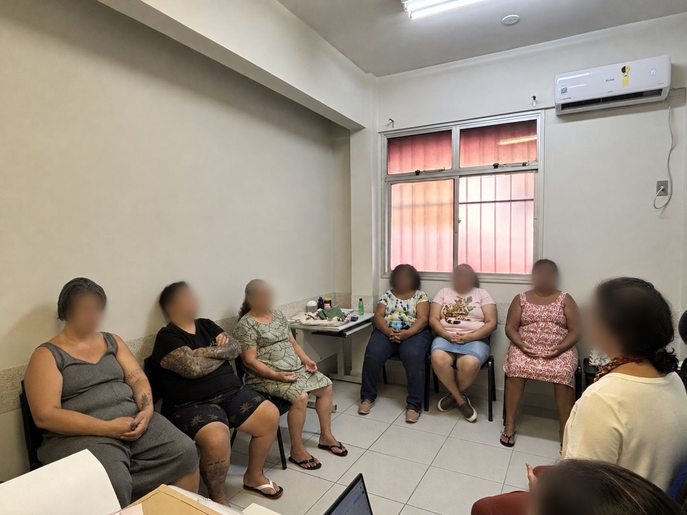
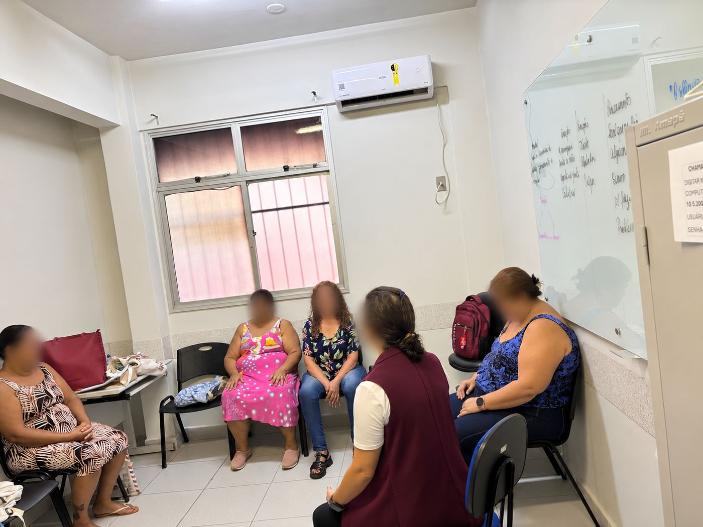
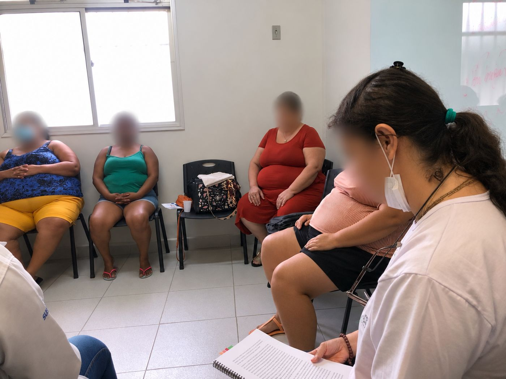
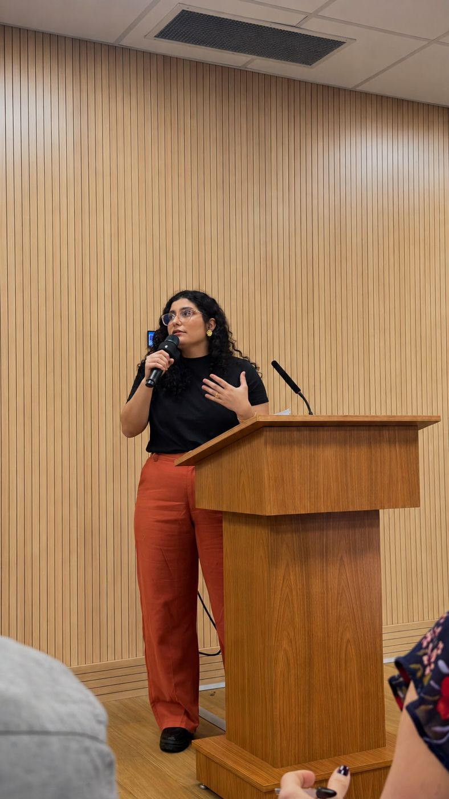
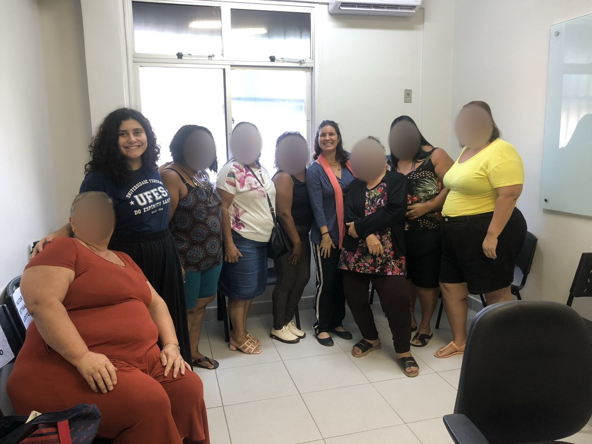
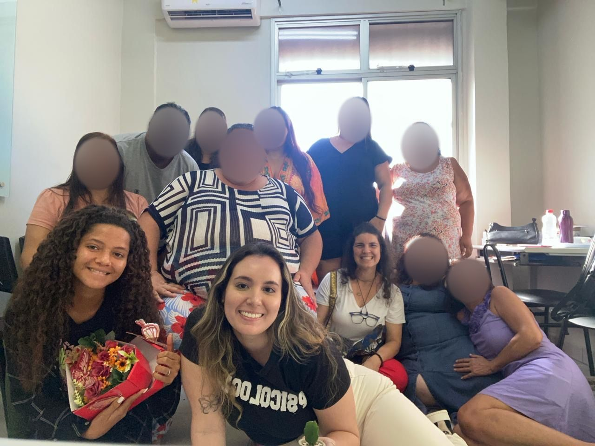

2026
The setting
The university hospital in Vitória runs a programme that follows people with obesity before and after bariatric surgery. Surgery changes the body quickly, but people's relationship with food, stress and their own bodies takes longer to change. People living with obesity often deal with anxiety, guilt and the weight of stigma, and eating can become a way of coping with difficult emotions.
Our team wanted to know whether a structured mindfulness programme could help with that, as a complement to the care the programme already offered.


The intervention
Mindfulness-Based Relapse Prevention (MBRP) was developed at the University of Washington to help people avoid relapse into substance use, and was brought to Brazil by the Federal University of São Paulo (UNIFESP). Professor Lívia, who trained in the protocol at UNIFESP, proposed adapting it to the bariatric programme.
The structure stayed the same: eight weekly group sessions combining guided meditation, psychoeducation and conversation about what participants noticed during the week. What changed was the content. Practices and examples were adjusted to the challenges of the surgical journey, such as automatic or impulsive eating, noticing hunger and fullness, and the changes that come before and after the operation. The groups met on Monday mornings, in the one room the service could offer us, and were led by Professor Lívia as the certified facilitator.
From outreach to research
The project began in 2023 as an outreach activity to see whether the format worked in the service. Between April 2023 and September 2024 the team ran 28 weekly sessions with patients from the programme. Building on that experience, it became a pilot study approved by the hospital's ethics committee. Participants completed questionnaires on mindfulness, perceived stress, sleep quality and quality of life before and after the eight sessions, and we kept notes on what they shared along the way.
About fifteen people usually came to the first meeting of each group, but attendance dropped after the first sessions. The final study group was ten women aged 40 to 64. With a sample that small, the changes in the questionnaires weren't statistically significant. Even so, participants described feeling less stressed, more aware of their emotions and better equipped to deal with them, and the protocol proved feasible in the service.

My part
I was involved from first contact to the final report. I helped recruit patients referred by the programme's psychologist, screened about fifty people and interviewed around thirty. Before each group started, we held welcome meetings and individual anamnesis interviews to get to know each person's history and what they hoped for.
I supported five groups. I administered the questionnaires before and after each cycle, often sitting with participants who found the forms hard to follow and going through the questions with them one by one. When attendance kept falling, we set up a WhatsApp group to remind people of the sessions and keep them connected. I organised the quantitative and qualitative data, ran the analyses in GraphPad Prism and wrote up the results.
It also taught me how research actually happens in a public hospital: one available room, a single weekly time slot, high drop-out and questionnaires that didn't always suit the people answering them.



The booklets
To support the groups, we created two psychoeducational materials for patients in the programme. The first, Atenção Plena (“Mindfulness”), introduces mindfulness in plain language: what it is, how it can help with hunger and fullness cues, emotions and the changes surgery brings, and how to begin with small moments in everyday life. The second is a leaflet explaining what MBRP is and what happens over the eight weeks.
Atenção Plena: a resource for health and wellbeing in bariatric surgery
I co-developed both materials with the project team. They are shown in Portuguese, as they were given to participants.
What came out of it
We shared the work in an article, at conferences and in a talk at the hospital's research programme. In 2025 it received second place for best undergraduate research project at HUCAM/UFES.
Article · 2025Mindfulness in bariatric surgery: our experience applying the MBRP protocol at HUCAMPráxis em Saúde, 3(2). An account of the outreach phase, April 2023 to September 2024. In Portuguese.↗
Conference paper · 2025Mindful awareness booklet in bariatric surgery: a psychoeducational strategy for public healthPresented orally at the II Brazilian Congress on Integrative Health Practices (COBRAPICS), Salvador, and published in its proceedings.↗
In preparationMindfulness-Based Relapse Prevention for bariatric patients: implementation in a Brazilian university hospitalRodrigues, Perin, Tonon, Barbalho, & Nascimento
Article DOI: 10.56579/prxis.v3i2.2628 · Proceedings DOI: 10.29327/1548140